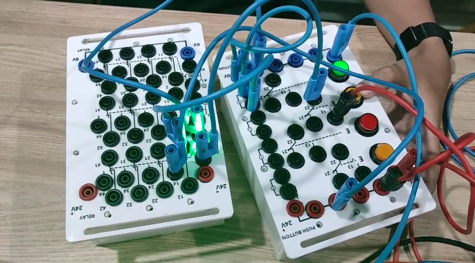

StatusRelay and push-button stage tested · Team project

Functional demonstration of the physical training workbench
01 / CASE STUDYThe system
The team built a training station with push-button inputs and relay outputs. It provides a physical foundation for control exercises and a later PLC integration stage.
At the documented stage, the workbench used relay and push-button logic. The PLC itself had not yet been added.
02 / CASE STUDYMy contribution
Helped construct the workbench frame from the initial fabrication stage.
Built and wired the push-button input box and relay output box with the team.
Participated in functional testing of the physical workbench and panels.
03 / CASE STUDYTested result
The physical workbench and its input-output panels were completed and functionally tested.
This case study covers the relay-based training stage. It does not claim that PLC control had been implemented.